On Saturday, 2 June, 2012, at 9:00am, a tree fell on our house. It went about a foot and a half into the roof. There is cracked plaster on the ceiling in the corner of the room below, but no other visible damage inside. Nobody was hurt.
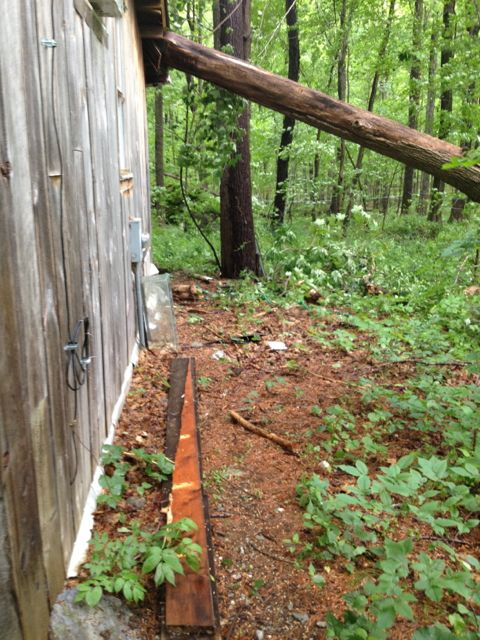
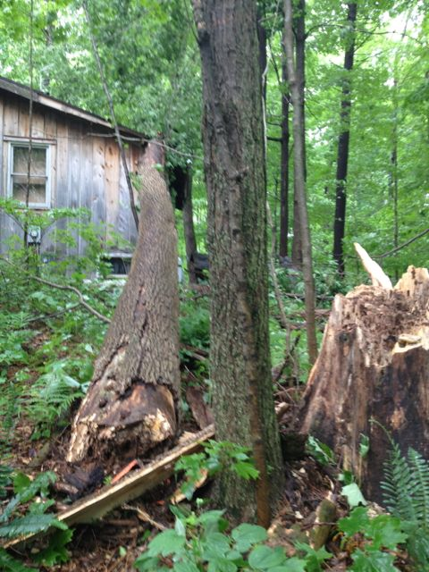
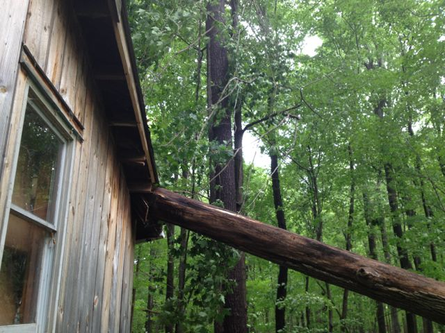
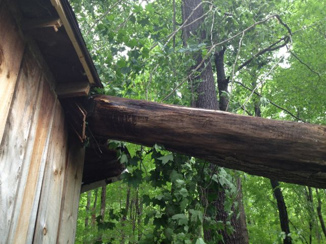
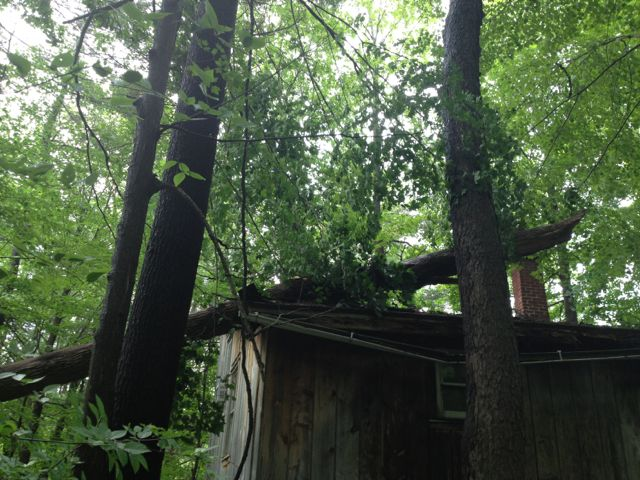
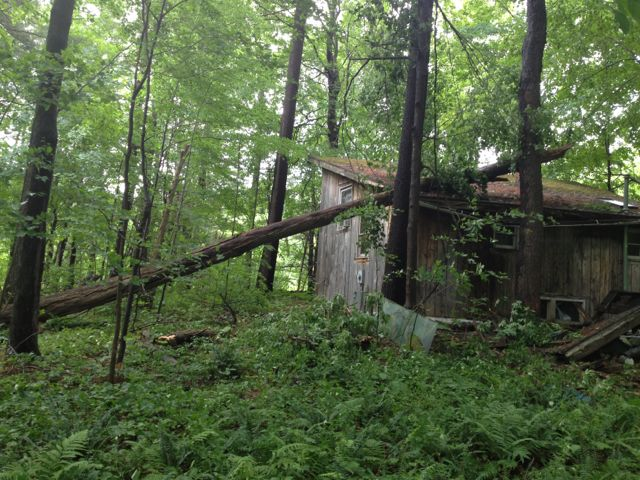
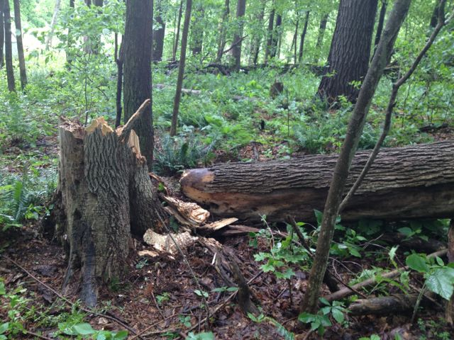
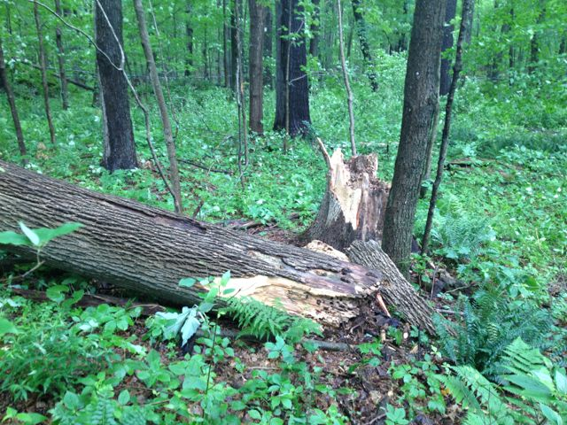
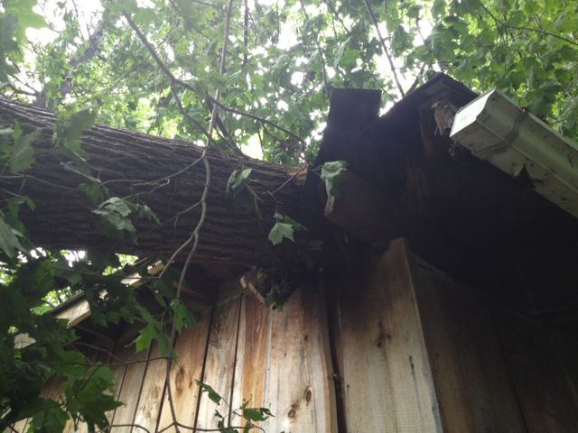
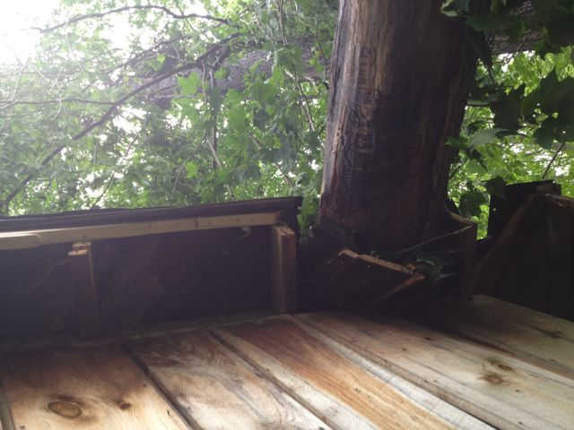
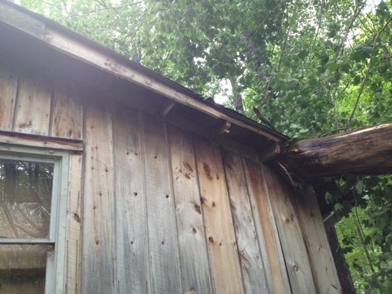
My neighbor has had that tree marked for a while, to use as firewood for his maple syrup business. He came over the same afternoon, with a tractor, a chain, and a chainsaw, cut three eight-foot sections off the end of the tree, then lifted the end of the sixteen feet that were left with the scoop of the tractor, and yanked it off. The pieces are now sitting at the end of his driveway, awaiting further division and splitting before next spring's maple season.
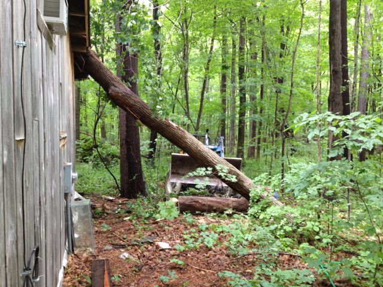
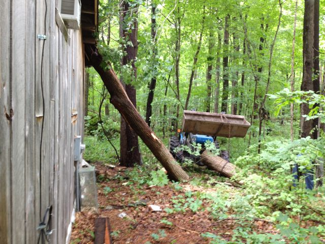
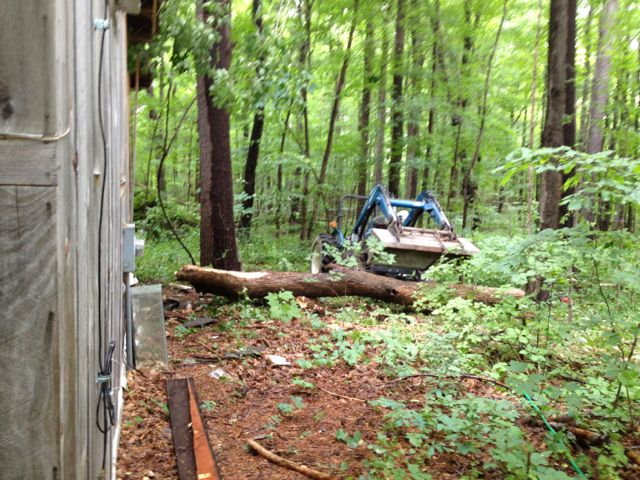
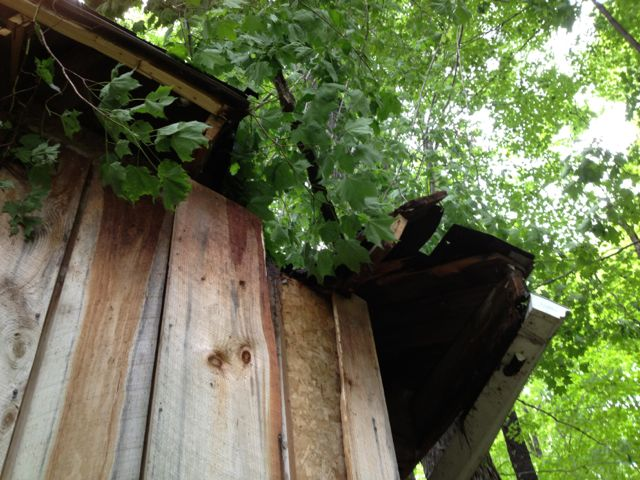
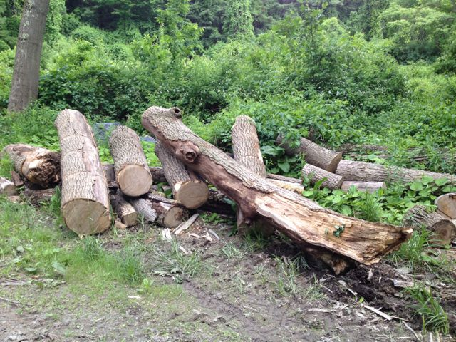
youtu.be/NqG2bjXHbUw is a short video of the last two stages of my neighbor removing the tree.